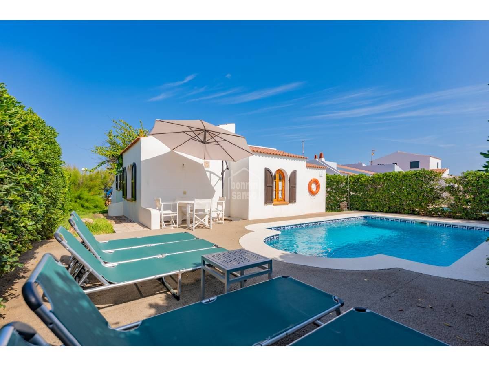

€970.000
Cap d’Artrutx, Ciutadella, Menorca, Spain
Open the listingTrue front-line west-coast character: whitewash, terracotta roof, green/wood shutters and a built private pool with the sound of the sea as everyday backdrop — not sleek-only. Distinct from board Cap d’Artrutx set (37001 €975k / 116 m²; 02syab €760k / 164 m² cross-list; 047bw0 €990k / 90 m²).
Opened 12 Sep 2026. Asking 970.000 €. 3 double beds, 2 baths, open-plan living with large sea-facing windows, fitted kitchen. Habitable now.